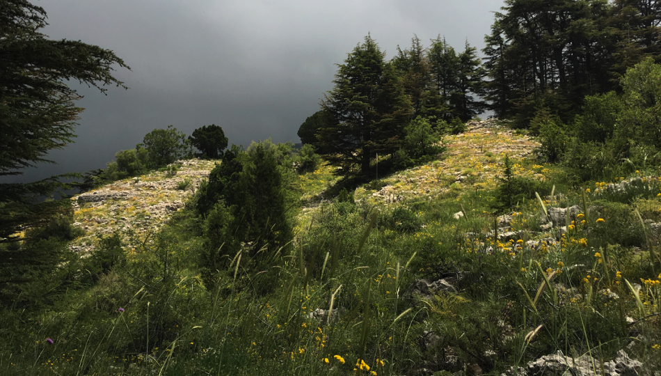
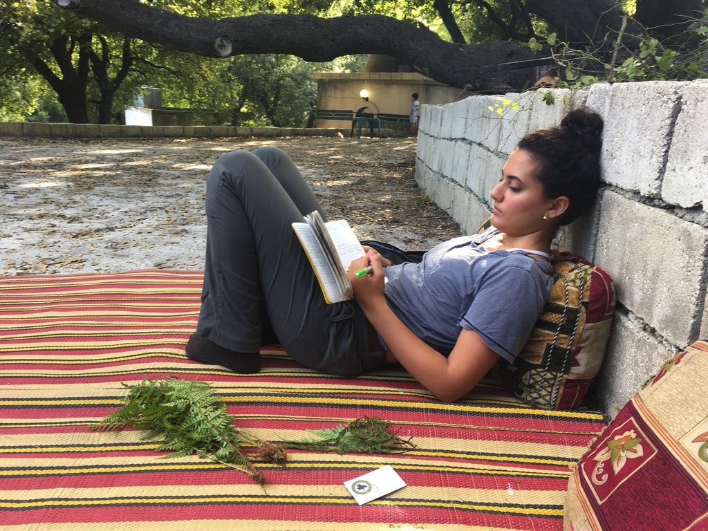

Maryam Sedaghatpour
By Olivia Jerram | June 25, 2020

UC Berkeley graduate student Maryam Sedaghatpour sits after a day of collecting plant specimens in Syria during summer 2018. Courtesy: Maryam Sedaghatpour.
Name:
Maryam Sedaghatpour
Age:
28
Hometown:
Northern Virginia, just outside of Washington, D.C.
Department:
Integrative biology at UC Berkeley
Research topic:
Origins, evolution, and conservation of eastern Mediterranean plant diversity.
A few months ago, Maryam Sedaghatpour booked a plane ticket to Lebanon and wrote a packing list: ocean-friendly sunscreen, a new hardcover waterproof field notebook, an international driver’s license. She called around to set up care for her two cats. And she slowly let her excitement sink in.
Of course, she didn’t catch her plane in April, but I learn that even before COVID-19 interrupted her plans to conduct fieldwork in the eastern Mediterranean, academia has not always made it easy for her and her research to feel welcome.
“Sometimes, when grad school would be very emotionally and psychologically difficult, I would [say], ‘I'm going to quit everything. I'm going to move to Lebanon. I'm going to be a ceramic artist, and that's it,” Maryam says.
She leans over and holds up a clay torso she sculpted: “Here's my little ceramic woman with her arm fallen off.” She returns the statue to her desk with a gentle clunk.
Maryam later tells me the story behind the statue — she made it, along with others, during a leave of absence in early 2019. By April of that year, she had nearly made up her mind that she would not be returning to her graduate program at UC Berkeley.
But Maryam did return, after she learned she’d been awarded a three-year fellowship from the National Science Foundation — it wasn’t the first time she’d considered a career as an artist and ended up turning to science.
“During high school, middle school — those child years, basically — there wasn’t really anything that interested me. The only thing I really did like was art. I liked to work with my hands; I liked to build sculptures and ceramics and pottery,” Maryam says. “But once I started college, … I started learning more about the state of the environment … and it made me really mad. And when I get mad, I like to do stuff with it.”
Maryam decided to change her major at George Mason University to environmental science, which led to a job examining ethanol-preserved ichthyoplankton through a microscope. She moved on to a botany lab when she realized that she was less interested in the fish larvae than in the plant fragments washing around the gridded Petri dishes.
Under associate professor Dr. Andrea Weeks, she researched the population genetics of Melampyrum lineare (Orobanchaceae), a partially parasitic plant from the eastern United States that supplements photosynthesis with the ability to tap into other plants’ roots to steal nutrients.
And then in 2017, two things happened: Maryam started flying out to graduate schools she’d applied to, and President Donald Trump was sworn into office for the next four years, in a city just three stops on the Metro from where she was living. While she was interviewing at UC Berkeley, Executive Order 13769 — frequently known as the Muslim ban — went into effect.
“The stigmas about the Middle East have always been part of my life, but seeing it so front and center just really got to me, and I [thought], ‘If I'm going to be doing this type of work [and] I'm going to be studying plants, I don't want to study the tropics or California plants. I want to study plants from where my ancestors are,” Maryam says. “And not only because I'm emotionally invested — it's in my blood. I can't help it.”
Contributing to Maryam’s decision was the fact that the Middle East is dramatically understudied and overlooked, the result of centuries of Western imperialism as well as American misconceptions about the political climate there in recent times. Then, she tells me she’s going to go off-track for a moment: “Just bear with me.”
There’s a conference put on by the Botanical Society of America that Maryam has gone to every year, ever since she first started her research on parasitic plants. When she attended in 2019, she had just come up with research ideas for her PhD and was ready to share them with her community.
“When I went, I was kind of like a different person — I had a different project; I had different intentions; I was coming in and saying, 'I do field work in Syria.' And so many people wouldn't care about the plants or the science. They would just be like, 'Oh, my God, that's so dangerous,’” Maryam says. “There was this one guy that made a national security joke. He was like, ‘Oh, I know some people in D.C. that would like to talk to you.’ And I was like, ‘Oh, I’m from D.C. Who? Like Smithsonian people?’ And that’s not what he’d meant. Stuff like that really gets to me, especially because that's the region where I'm from, that's where my genetic heritage is: in the Middle East.”
There’s a pause and I feel the need to apologize, so I do. She tells me that it’s expected, and I say that it shouldn’t be.
"I know it shouldn't be,” she says, “but it is.”
I ask Maryam about other experiences she’s had like this one, and she tells me that she usually can’t pinpoint just one or two things — it’s “everything, everyday.”
“[As an undergraduate], I had this unparalleled dedication and passion. I was like, nothing you can say [about graduate school] is going to ruin this for me. I want to do this, I'm excited, I'm determined,” Maryam says. “And I feel like my relationship with [my work] has shifted a lot ever since I started grad school, and it's not because of anything that’s about the material or the process of science itself.”
It’s the microaggressions — prejudices and biases so small and so frequently lobbed at her that she says she never thought about the word. She just knew what it felt like.
“After three years of being in grad school and seeing the pretty ugly interpersonal workings of being within the scientific field, it's been a very huge deterrent, because I don't want to spend my life like that,” Maryam says. “A lot of my negative experiences in terms of the culture and the community have definitely impacted how much I love science and how much I love to work — I think it's still there inside of me, it's just hiding.”
I can tell Maryam is right about it all still being inside of her, when she begins to explain her dissertation. She breaks it down for me, chapter by chapter. Chapter one: the phylogenetics and biogeography of Silene, a genus of over 700 species of flowering plants, some of which are endemic to the eastern Mediterranean.
Chapter two: the topic she’s been “obsessed with” since interviewing at UC Berkeley — spatial phylogenetics. Combining evolutionary information with the geographic distribution of native plants, she will determine regional phylogenetic diversity, a more complex measure of biodiversity than the usual metrics of species richness or abundance.
Chapter three: studying the overlap of habitat intactness with the status of land conservation efforts using satellite data, conservation reports, and interviews with locals. Cities, she says, will be the least protected, while national forests will be the most. But there are also areas in between, where conservation is more nuanced. For example, many sacred grave sites in the Middle East are not legally protected, but they benefit from cultural practices that leave them untouched, making them good candidates for pursuing a higher conservation status.
“The vision I have right now is that after I finish my PhD and I have all this data and information to share, I would spend the next couple of years working with the UN Food and Agricultural Organization,” Maryam says. “They oversee a lot of the conservation and habitat protection in the eastern Mediterranean, both in Lebanon and in Syria. I'm not really sure exactly how I'll pay the bills, but I'll figure something out.”
Maryam tells me she has never really had an affinity toward the idea of a job, something that you do just to get paid for. And this takes us back to her art.
“I mean, my whole life up until undergrad, I thought that I would be an artist,” she reminds me. "I really do believe that art and science are so interconnected. Sure, the output is different — very different — but the way you go about it, like having an open and creative mind, is something that is required for both.”
Science, like art, is also imperfect, Maryam points out. The process of it is theoretically uncomplicated, but the practice never is, and that has led to a long history of racism and sexism in scientific fields — something that is still ongoing.
“I guess what I would like people to take away from reading about my story is: As a mostly self-empowered woman of color, academia has not been kind to me but that doesn’t mean I don’t belong in academia — it only means academia needs to do better,” Maryam says. “My hope is that if a little brown girl is reading this, she knows that she can be a scientist if she wants to, and if anyone … tries to make her feel less than, to just push back harder.”